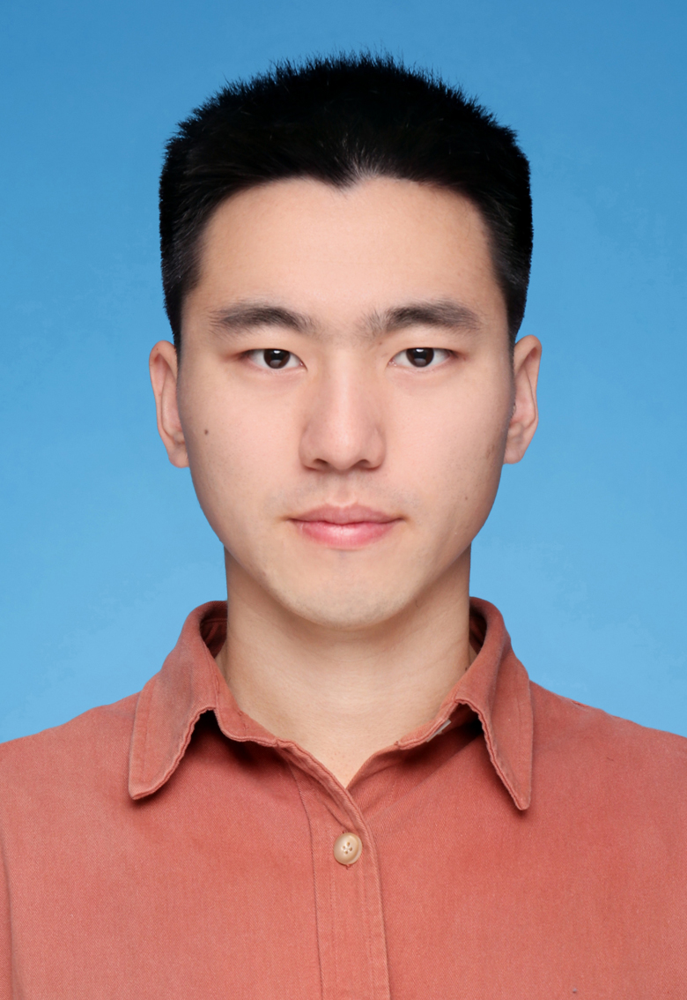
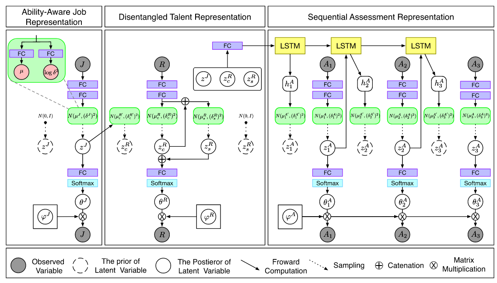
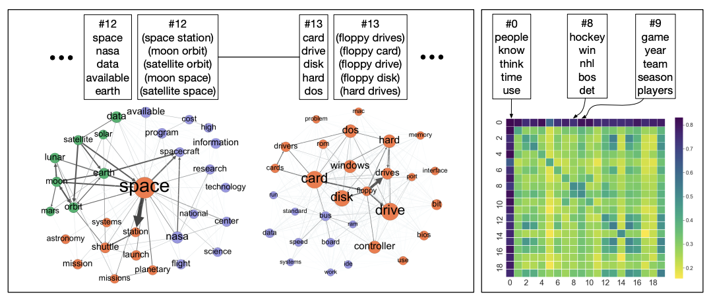
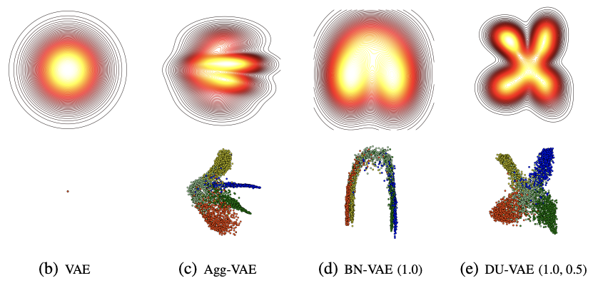
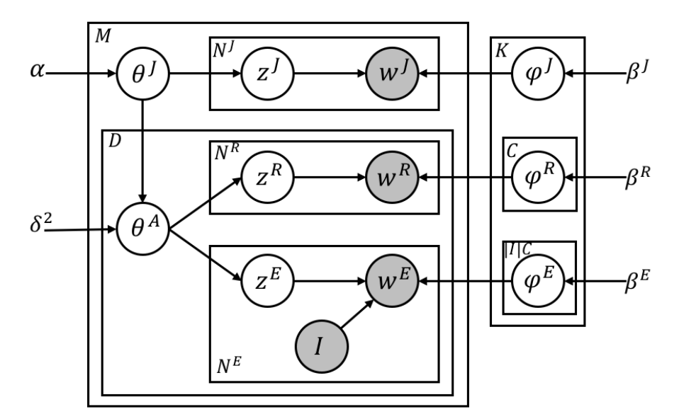
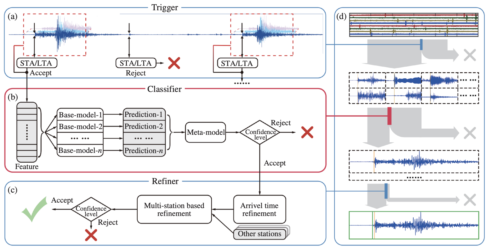

 |
Dazhong ShenPHD CandidateUniversity of Science and Technology of China Email: sdz@mail.ustc.eud.cn CV • Google Scholar • GitHub |
Bio
- I am currently a 5th Ph.D. candidate in the University of Science and Technology of China (USTC) under the supervision of Prof. Hui Xiong. I received my B.S. degree in Mathematics from USTC in 2017. I have also spent time at Talent Intelligent Center ,Baidu Inc. as a Research Intern from 2017 to 2022 under the supervision of Dr. Hengshu Zhu.
- My general research interest includes data mining and machine learning, focusing on generative models, variation inference, graph neural networks, and their data intensive applications.
Selected Publications

Joint Representation Learning with Relation-enhanced Topic Models for Intelligent Job Interview Assessment.
Dazhong Shen, Chuan Qin, Hengshu Zhu, Tong Xu, Enhong Chen, Hui Xiong.
ACM Transactions on Information Systems (TOIS), 2021.
[Paper]
Dazhong Shen, Chuan Qin, Hengshu Zhu, Tong Xu, Enhong Chen, Hui Xiong.
ACM Transactions on Information Systems (TOIS), 2021.
[Paper]



A Joint Learning Approach to Intelligent Job Interview Assessment.
Dazhong Shen, Hengshu Zhu, Chen Zhu, Tong Xu, Chao Ma, Hui Xiong.
The 27th International Joint Conference on Artificial Intelligence (IJCAI-2018), 2018.
[Paper]
Dazhong Shen, Hengshu Zhu, Chen Zhu, Tong Xu, Chao Ma, Hui Xiong.
The 27th International Joint Conference on Artificial Intelligence (IJCAI-2018), 2018.
[Paper]

EL-Picker：基于集成学习的余震P波初动实时拾取方法.
申大忠, 张琦, 徐童, 祝恒书, 赵雯佳, 殷子凯, 周培伦, 房立华, 陈恩红, 熊辉.
《中国科学: 信息科学》, 2020.
[Paper]
申大忠, 张琦, 徐童, 祝恒书, 赵雯佳, 殷子凯, 周培伦, 房立华, 陈恩红, 熊辉.
《中国科学: 信息科学》, 2020.
[Paper]
Honors
- Huawei Scholarship (USTC). (for postgraduate and PhD student) 2018, 2021
- Global Digital Technology Scholarship. 2018
- IJCAI-2018 Student Travel Grants. 2018
- Aftershock Detection Contest (China Earthquake Administration), Runner-Up. 2017
- Academic Scholarship (USTC), Grad 1. five times from 2017 to 2021
- Zhang Zongzhi Science and Technology Scholarship (USTC). 2016
- Outstanding Student Scholarship (USTC), Silver Medal. 2015
- Outstanding Student Scholarship (USTC), Bronze Medal. 2014
Academic Services
- PC Member, The 39th International Conference on Machine Learning (ICML-2022)
- PC Member, The 28th ACM SIGKDD Conference on Knowledge Discovery and Data Mining (KDD-2022)
- PC Member, The 36th Conference on Neural Information Processing Systems (NeurIPS-2022)